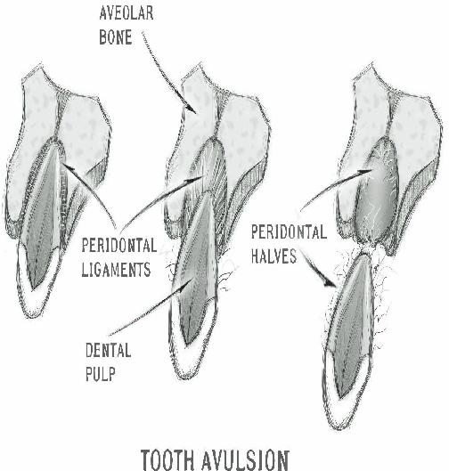
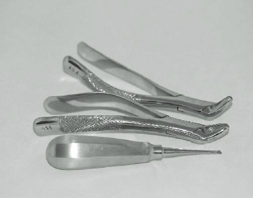
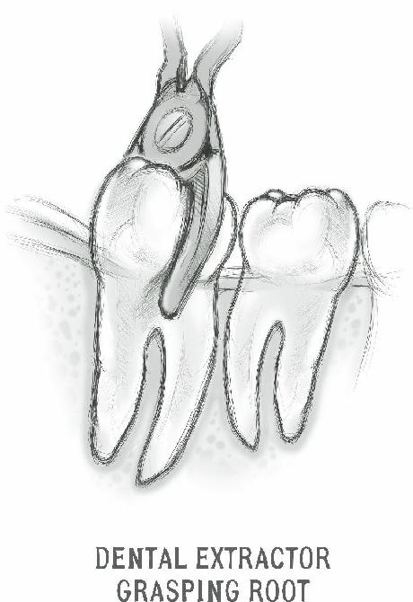
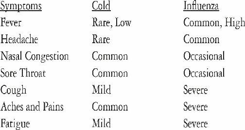
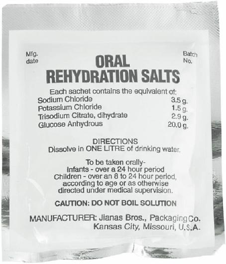
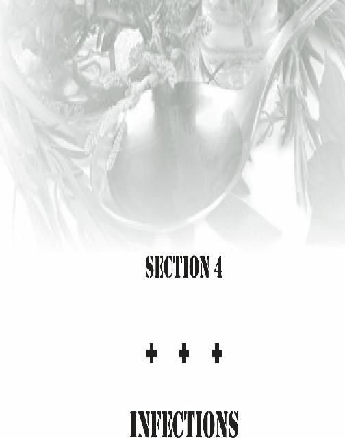

Ellis 2 fractures: Ellis 2 fractures show yellow or beige dentin under the enamel. This area may be sensitive and should be covered if

possible. The composition of dentin is different than enamel and bacteria may enter and infect the tooth. This is especially the case with pediatric dental trauma.
Ellis 3 fractures. Here the pulp and dentin are both exposed, and Ellis 3 fractures can be quite uncomfortable. If the pulp is exposed, it may bleed. Protective coverings will be most necessary here, and the risks of permanent damage most likely, especially in a collapse.
When you identify a fracture of a tooth, you should evaluate the patient for associated damage, such as to the face, inside of the cheek, tongue, and jaw. On occasion, a tooth fragment may be lodged in the soft tissues and must be removed with instruments.
There is likely to be blood due to the trauma, so thoroughly clean out the inside of the mouth so you can fully assess the situation. Then, using your gloved hand or a cotton applicator, lightly touch the injured tooth to see if it is loose. Don’t forget your bite block.
For sensitive Ellis II fractures of dentin, cover the exposed surface with a calcium hydroxide composition
(commercially sold as “Dycal”), a fluoride varnish
(fluoride is rarely beneficial in drinking water, in my opinion, but is acceptable as a direct application to the tooth defect in this situation) or even clear nail polish or a medical adhesive such as Dermabond (medical super glue) to decrease sensitivity. Provide pain medications and instruct the patient to avoid hot and cold food or drink.
Ellis III fractures into pulp are trouble, due to the risk of infection, among other reasons.
Calcium hydroxide on the pulp surface coupled with additional temporary cement can be used as coverings. Provide for analgesics and antibiotics. Penicillin and Doxycycline are acceptable options. Despite all this, the prognosis is not favorable without modern dental intervention.
A particularly difficult dental fracture involves the root.
Sometimes, it is not until the gum is peeled back that a fracture in the root is identified. If this is the case, the tooth is likely unsalvageable (especially in vertical fractures) and, in a power-down situation, should be extracted.
Dental Subluxations and Avulsions

A tooth that is knocked loose but not out of its alveolar socket is called a “subluxation”. Lightly using your gloved hand or a cotton applicator should identify if it is loose and how much. Minimal trauma may require no major intervention.
If a tooth is loose, it should be pressed back into the alveolus (socket) and “splinted” to neighboring teeth for stability. Dentists use wire or special materials for this purpose, but you might find yourself having to use soft wax if professional help is not at hand. If you can, use enough wax to anchor the loose tooth to neighboring teeth both in front and in back. Prevent further trauma by placing on a liquid diet (juices, gelatin) for a time, until the tooth appears well anchored. Soft diets (things like puddings or soft cereals) are also ok.
The most favorable situation when a tooth is completely knocked out (an “avulsion”) is that it came out in one piece, down to its root and ligaments. In this circumstance, time is a very important factor in possible treatment success. If the tooth is not replaced or at least plac ed in a preservation solution, the success of reimplantation drops 1% every MINUTE the tooth is not in its socket.
A good preservation liquid for teeth that have been knocked out is “Hank’s Solution”. This is a balanced salt solution that has been used to culture living cells, and it helps protect raw ligament fibers for a time. Hank’s
Solution is available commercially as “Save-a-Tooth”.
Although you can make your own Hank’s Solution, it is a fairly complex process.
If you are not at your retreat at the time of injury:
Find the tooth
Pick it up by the crown, avoid touching the root as it will damage the already damaged ligament fibers.
Flush the tooth clean of dirt and debris with water or saline solution. Don’t scrub it, as it will damage the ligament further.
If you don’t have preservation solution, place the tooth in milk, saline solution, or saliva (put it between your cheek and gum, or under your tongue). This will keep your ligament cells alive longer than plain water will.
If the tooth has been out for less than 15 minutes, you may attempt to re-implant it. Flush the tooth and the empty socket with Hank’s solution (Save-a-Tooth), replace the tooth and cover with cotton or gauze. Then, have the patient bite down firmly to keep it in place.
Splint it with soft wax to the neighboring teeth and place your patient on a liquid diet. Antibiotics such as Penicillin
(veterinary equivalent: Fish-Pen) or doxycycline (BirdBiotic) will be helpful to prevent infection.
You may have to soak the tooth for a half hour or so in Hank’s Solution before you replace it, if it has been out for more than 15 minutes. The longer you wait to replace the tooth, the more painful it will likely be to replace, so make sure you have lots of pain relief meds in your supplies.
After a couple of hours of being out, the ligament fibers dry out and die, and the tooth is for most intents and purposes dead. Replacing it at this point is problematic, as the pulp will decay like all dead soft tissue does. This may cause a chronic inflammation; as such, the rotting pulp is usually removed in a root canal procedure by a dentist. The dead tooth (which may turn dark in color) then scars down into its bony socket, acting like a dental implant. This is called “Ankylosis”.
This is part of the reason why you should not replace
“baby teeth”, because the scarring process may prevent the permanent teeth from emerging.
It’s important to know that, in mature permanent teeth, the pulp doesn’t survive the injury even if the ligament does. As such, without the availability of modern dental care to remove dead tissue, even your best efforts may be unsuccessful. Serious infection in the dead pulp often ensues, and your patient may be in a worse situation than just missing a tooth.
Life with dentists may be unpleasant sometimes
(root canals, for example), but life without dentists will leave us with few options in most dental emergencies. In such circumstances, we may have to return to tooth extraction as the treatment of choice.
Dental Extraction
You, as medic, will eventually find yourself in a situation where you have to remove a diseased tooth. The important thing to know is that 90% of all dental emergencies can be treated by extracting the tooth.
Tooth extraction is not an enjoyable experience as it is, and will be less so in a longterm survival situation with no power and limited supplies. Unlike baby teeth, a permanent tooth is unlikely to be removed simply by wiggling it out with your (gloved) hand or tying a string to it and the nearest doorknob and slamming. Knowledge of the procedure, however, will be important for anyone expecting to be the medical caregiver in the aftermath of a major disaster.
Before we go any further, I have to inform you that
I am not a dentist, just an old country doctor. It is illegal and punishable by law to practice dentistry without a license. The lack of formal training or experience in dentistry may cause complications that are much worse than a bum tooth. If you have access to modern dental care, seek it out.
Proper positioning will help you perform the procedure more easily. For an upper extraction (also called a “maxillary extraction”), the patient should be tipped at a 60 degree angle to the floor. The patient’s mouth should be at the level of the medic’s elbow. For a lower extraction, (also called a “mandibular extraction”), the patient should be sitting upright with the level of the mouth lower than the elbow. For right-handed medics, stand to the right of the patient; for left-handers, stand to the left. For uppers and most front lower extractions, it is best to position yourself in front. For lower molars, some prefer to position themselves behind the patient.
To begin with, you will want to wash your hands and put on gloves, a face mask, and some eye protection. You will want to keep the area around the tooth as dry as possible, so that you can see what you’re doing. There will be some bleeding, so you might want to place cotton balls or rolled gauze squares around the

tooth to be removed. These may have to be changed from time to time.
The teeth are held in place in their sockets by ligaments, which are fibrous connective tissue. These ligaments must be severed to loosen the tooth. This is accomplished with an elevator, which looks like a small flathead screwdiver or small chisel. See the image below for the proper way to hold the instrument.
Dental Extractors and Elevator
Go between the tooth in question and the gum on all sides and apply a small amount of pressure to get down to the root area. This should loosen the tooth. Expect some bleeding.
Take your extraction forceps and grasp the tooth as far down the root as possible. This will give you the best chance of removing the tooth in its entirety the first time. For front teeth (which have 1 root), exert pressure straight downward for uppers and straight upward for lowers, after first loosening the tooth with your elevator.
For teeth with more than 1 root, such as molars, a rocking motion will help loosen the tooth further as you extract. Once loose, avoid damage to neighboring teeth by extracting towards the cheek (or lip, for front teeth)
rather than towards the tongue. This is best for all but the lower molars that are furthest back (wisdom teeth).

Use your other hand to support the mandible (lower jaw)
in the case of lower extractions. If the tooth breaks during extraction (not uncommon), you will have to remove the remaining root. Use your elevator to further loosen the root and help push it outward.
Afterwards, place some gauze on the bleeding socket and have the patient bite down. A product known as
Actcel hemostatic gauze is helpful to slow excessive bleeding; cut the gauze into small moistened squares and place directly on the bleeding area. It should form a gel which can be rinsed away with water in 24 hours.
Occasionally, a suture may be required if bleeding is heavy. Use 4-0 chromic catgut absorbable suture material in this case. In a recent Cuban study, veterinary super glue (N-butyl-2-cyanoacrylate) was used in over
100 patients in this circumstance with good success in controlling both bleeding and pain. Dermabond has been used in some cases in U.S. emergency rooms for temporary relief. Hot liquids and hard foods should be avoided for 24-72 hours.
Expect some swelling, bruising, and pain over the next few days. Cold packs will decrease swelling for the first 24-48 hours; afterwards, use warm compresses to help with jaw stiffness. Also, consider antibiotics, as infection is a possible complication. Liquids and a diet of soft foods should be given to decrease trauma to the area.
Use non-steroidal anti-inflammatory medicine such as Ibuprofen for pain. Stay away from aspirin, as it may hinder blood clotting in the socket. The blood clot is your friend, so make sure not to smoke, spit, or even use straws; the pressure effect might dislodge it, which could cause a painful condition called Alveolar Osteitis or
“dry socket”.
You will notice that the clot is gone and may notice a foul odor in the person’s breath. Antibiotics and warm salt water gargles are useful here, and a solution of water with a small amount of Clove oil may serve to decrease the pain. Don’t use too much clove oil, as it could burn the mouth.
In a longterm survival situation, difficult decisions will have to be made. If modern dentistry is gone due to a mega-catastrophe, the survival medic will have to take on that role as well as the role of medical caregiver.
Performing dental procedures without training and experience, however, is a bad idea in any other scenario.
Never perform a dental procedure on someone if you have modern dental care available to you.

Even with today’s modern medical technology, most of us can’t avoid the occasional respiratory infection.
Without strict adherence to sanitary protocol, it would be very easy in a collapse situation for your entire community to come down with colds, sinusitis, influenza or even pneumonia. Common colds may be caused by any of 200 different viruses. Influenza comes from viruses in the Influenza A, B, and C categories.
The societal risk of influenza is significant, mostly from Influenza A viruses. Over the course of time, influenza outbreaks from this category have included:
The Russian Flu in 1889-90 (1 million deaths)
The Spanish Flu in 1918 (50-100 million deaths)
The Asian Flu in 1957-8 (1-1.5 million deaths)
The Hong Kong Flu in 1968-9 (750,000 deaths)
The Swine Flu in 2009-2010 (18,000 deaths)
Most of the above deaths associated with influenza are not caused by the virus, itself. They are due to bacterial pneumonia, a secondary infection which invades the patient through a virus-weakened immune system.
In general, most respiratory infections are spread by viral particles, and the organisms that cause these infections can live for up to 48 hours on common household surfaces, such as kitchen counters, doorknobs, etc. Contagious viral particles can easily travel 4 to 6 feet when a person sneezes.
Respiratory issues are usually divided into upper and lower respiratory infections. The upper respiratory tract is considered to be anything at the level of the vocal cords (larynx) or above. Oftentimes, the diagnosis will be related to the part of the upper respiratory system affected. This includes:
The nose: Rhinitis
The throat: Pharyngitis
The sinuses: Sinusitis
The voice box: Laryngitis
The epiglottis: Epiglottitis
The tonsils: Tonsilitis
The ear canal: Otitis
(the suffix “-itis” simply means “inflammation of”)
The lower respiratory tract includes the lower windpipe, the airways (taken together, called “bronchi”)
and the lungs themselves. Respiratory infections, such as bronchitis and pneumonia, are the most common cause of infectious disease in developed countries.
Symptoms of the common cold can include fever, cough, sore throat, runny nose, nasal congestion, headaches, and sneezing.
Symptoms of lower respiratory infections (pneumonia and some bronchitis)
include cough (with phlegm, it is referred to as a
“productive” cough), high fever, shortness of breath, and weakness/fatigue. Most respiratory infections start showing symptoms 1 to 3 days after exposure to the causative organism. They can be expected to last for 7 to 10 days if upper and somewhat longer if lower.
Colds vs. Influenza
There are differences between the common cold and influenza that are helpful to make a diagnosis. The symptoms are similar, but are more likely and more severe in one or the other. Consult the list below to identify what you’re most likely dealing with:

For influenza, the administration of antiviral medications such as Tamiflu or Relenza will shorten the course of the infection if taken in the first 48 hours after symptoms appear. After the first 48 hours, antivirals have less medicinal effect.
For colds, concentrate your treatment on the area involved; nasal congestion medication for runny noses or sore throat lozenges for pharyngitis, for example.
Ibuprofen or Acetaminophen will alleviate muscle aches and fevers. Steam inhalation and good hydration also give some symptomatic relief. Various natural remedies are also useful to relieve symptoms, which we will discuss in the next section of this book.
Although most upper respiratory infections are caused by viruses, some sore throats may be caused by a bacterium called Beta-Streptococcus (Also known as
Strep Throat). These patients will often have small white spots on the back of their throat and/or tonsils, and are candidates for antibiotics. Amoxicillin (veterinary equivalent: Fish-Mox) or Keflex (Fish-Flex) are some of the drugs of choice in those not allergic to Penicillin drugs. Erythromycin (Fish-Mycin) family drugs are helpful in those who are Penicillin-allergic.
In most cases, however, it is not appropriate to use antibacterial agents such as antibiotics for upper respiratory infections. Antibiotics have been overused in treating these problems, and this has led to resistance on the part of some organisms to the more common drugs.
Resistance has made some of the older antibiotics almost useless in the treatment of many illnesses.
Lower respiratory infections, such as pneumonia, are the most common cause of death from infectious disease in developed countries. These can be caused by viruses or bacteria. The more serious nature of these infections leads many practitioners to use antibiotics more often to treat the condition. Most bronchitis is caused by viruses, however, and will not be affected by antibiotics. Antibiotics may be appropriate for those with a lower respiratory infection that hasn’t improved after several days of treatment with the usual medications for upper respiratory infections.
The patients who are at-risk will appear to have worsening shortness of breath or thicker phlegm over the course of time despite the usual therapy. There is a school of thought that recommends more liberal use of antibiotics in sick persons over the age of 60 or those with other serious medical conditions. This population has a higher risk of death because of decreased resistance to secondary bacterial infections.
Both upper and lower respiratory infections are different than asthma, which is a condition where the airways become constricted in a type of spasm, causing a particularly vocal kind of breathing called a “wheeze”.
Asthma may occur as an allergic response, or may be associated with some respiratory infections, such as childhood “croup”. The treatment of asthma involves different medicines than colds or flus, such as certain antihistamines and epinephrine, than those used in treating respiratory infections.
Good respiratory hygiene is important to prevent patients with respiratory infections from transmitting their infection to others. Practicing good hygiene is not only a good strategy for you and your family, but demonstrates social responsibility and could prevent a pandemic. This is what needs to be done:
Sick individuals should cover their mouth and nose with tissues and dispose of those tissues safely.
Use a mask if coughing. Although others caring for the sick individual may wear masks
(N95 masks are best for healthcare providers), it is most important for the afflicted person to wear one.
Have caregivers perform rigorous hand hygiene before and after contact. Wash with soap and warm water for 15 seconds or clean your hands with alcohol-based hand sanitizers if they do not appear soiled.
Sick persons should keep at least 4 feet away from other persons, if possible, due to droplet spread.
Wash down all possibly contaminated surfaces such as kitchen counters or doorknobs with an appropriate disinfectant (dilute bleach solution will do).
Isolate the sick individual in a specific quarantine area, especially if he/she has a high fever.
Have medical care providers wear gloves at all times when treating the patient.
Don’t self-medicate, especially with antibiotics, unless modern medical care is not accessible for the foreseeable future;
Many of the strategies and treatments described above will deal with respiratory infections quite well, but what is modern pharmaceuticals are not available or are no longer produced due to a major catastrophe? In that circumstance, we must look to our own backyard and, if we planned wisely, our medicinal garden. We will have to consider natural substances that might help alleviate various respiratory symptoms and strengthen the body’s immune response.
Historically, Vitamin C, Vitamin E, and other antioxidants taken regularly are supposed to decrease the frequency and severity of respiratory infections. Many studies confirm their usefulness, although the amount of down time due to colds/flus per year was only decreased
1 day in one study. Despite this, antioxidant support of the immune system can be obtained through good nutrition or supplements and should be part of any approach to survival food storage.
Most natural remedies are meant to target individual symptoms, such as nasal congestion or fever. There are, however, a number of alternative treatments for various respiratory infections that are reported to help stimulate the entire immune system. Consider these essential oils:
Geranium
Clove Bud
Tea Tree
Lavender
To use these oils, you would use a procedure called
“direct inhalation therapy”. Place 2-3 drops on the palm of your hand. Warm the oil by rubbing your hands together, and then bring your hands to your nose and mouth. Breathe 3-5 times slowly and deeply. Relax and breathe normally for 2 minutes, then repeat the process.
Wipe any excess oil onto throat and chest.
Many herbs may be helpful when used internally as a tea. Popular ones for general respiratory support are
Elderberry, Echinacea, Licorice root, Goldenseal,
Chamomile, Peppermint, and Ginseng. Additionally, antibacterial action has been found in Garlic and Onion oil, fresh Cinnamon, and powdered Cayenne Pepper.
Other options include raw unprocessed honey, lemon, and apple cider vinegar, which are often added to one of the above herbal teas.
Other than general treatments, there are several good remedies to treat specific symptoms associated with colds and flu. To treat fever, for example, consider teas made from the following herbs:
Echinacea
Licorice Root
Yarrow
Fennel
Catnip
Lemon Balm
The underbark of willow, poplar, and aspen trees are known to be a source of Salicin, the essential ingredient in aspirin. Strip off the outer bark, take several strips of the green underbark and make a tea out of it. It should work as aspirin does to decrease fever.
Other strategies to combat fever include sponge baths with water and vinegar. It has also been reported that slices of raw onion on the bottom of the feet are effective in some cases (wear socks to hold them in place). I haven’t tested this last method myself, so I would appreciate input from people who have tried it.
Although I can’t tell you if it is effective, I can tell you that it probably isn’t very practical.
Others have used herbal aerosol “spritzers”.
Combine several drops of Chamomile, Lavender or
Thyme essential oil with water and spray on the chest, back, arms, and legs (avoid spraying the face). The cooling effect alone will be beneficial in those with fevers.
To deal with the congestion that goes along with most respiratory infections, consider using direct inhalation therapy (described above) or salves with these essential oils:
Eucalyptus
Rosemary
Anise
Peppermint
Tea Tree
Pine
Thyme
Another inhalation method of delivering the above herbs or even traditional medications involves the use of steam.
Steam inhalation is beneficial for many respiratory ailments and is easy to implement. Just place a few drops of essential oil into steaming water and lower your face to inhale the vapors. Cover the back of your head with a towel to concentrate the steam.
Herbal teas that relieve congestion include: Stinging
Nettles, Licorice Root, Peppermint, Anise, Cayenne
Pepper, Sage and Dandelion. Mix with honey and drink
3-4 times per day as needed. Fresh horseradish is used to open airways by taking ¼ teaspoon orally 3 times a day. Plain sterile saline solution (via nasal spray or in a
“neti pot”) is also used by both traditional and alternative healers.
For aches and pains due to colds, try using salves consisting of essential oils of:
St. John’s Wort
Eucalyptus
Camphor
Lavender
Peppermint
Rosemary
Arnica (dilute)
Helpful teas to relieve muscle ache include:
Passionflower, Chamomile, Valerian Root, Willow underbark, Ginger, Feverfew, and Rosemary. Drink warm with raw honey 3-4 times a day.
For the occasional sore throat, time-honored remedies include honey and garlic “syrups” and ginger,
Tilden flower, or sage teas. Drink warm with honey and perhaps lemon several times a day. Gargling with warm salt water will also bring relief. Licorice root and honey lozenges are also popular in decreasing painful swallowing.
A study in Israel used a substance found in black elderberries known as Sambucol. The study found that those who were given it had substantially shorter periods of flu symptoms than those given placebos. Sambucol is thought to have strong antioxidant properties and strengthen the immune system. It did not appear to affect those with the common cold, however.
Although the herbs described in this article have all been known to be helpful, it is important to remember that individual response to a particular herbal product differs from person to person. Also, the quality of an

essential oil may differ dependent on various factors, including rainfall, soil conditions or the time of year harvested.
Guide to protective masks
T ypical N95 mask
Throughout history, infectious diseases have been part and parcel of the human experience. Ever since the
Middle Ages, we have figured out that some infections have the capacity of passing from person to person.
Medical personnel have made efforts to protect themselves from becoming the next victim to succumb from the disease.
This makes sense from more than a selfish standpoint: In survival situations, there will be few medically trained individuals to serve a group or community. The medic, therefore, is a valuable resource. It would be a disservice to those they depend upon if they became ill during an epidemic.
Even before we knew there were such things as viruses and bacteria, efforts to protect the healthcare provider were made by the use of masks. Around the year 1900, masks began to be used routinely during surgery to prevent micro-organisms from contaminating the operative field. A secondary purpose was to protect the wearer from blood spatter and other fluids from the patient. These were not always used by all members of the surgical team until later in the century.
Nowadays, the basic surgical mask hasn’t changed much in general appearance. No doubt, you’ve seen photos of people wearing them in areas where there is an epidemic. In Asia, especially, it is considered good etiquette and socially responsible to wear them if you have a cold or flu and are going out in public. Face masks have the added advantage of reminding people to keep their hands away from their nose and mouth, a major source of the spread of infection.
If you will be taking care of your family or survival group in situations where modern medical care is unavailable, you will want a good supply of masks (and gloves) in your medical storage. Without these items, it will be likely that an infectious disease could affect every member, including yourself.
Medical masks are evaluated based upon their ability to serve as a barrier to very small particles (we’re talking fractions of microns) that might contain bacteria or viruses. These are tested at an air flow rate that approximates human breathing, coughing or sneezing.
As well, masks are tested for their ability to tightly fit the average human face. The most commonly available face masks use ear loops or ties to fix them in place, although adhesive masks are being developed. Most masks are fabricated of “melt-blown” coated fabric, providing better protection than woven cotton or gauze.
Despite this, masks do not confer complete immunity.
Standard medical masks have a wide range of protection based on fit and barrier quality; 3 ply masks
(the most common version) are more “breathable”, as you can imagine; 6 ply masks likely present more of a barrier. A tight fit is imperative in providing a barrier to infectious droplets.
The upgrade to the basic mask is the N95 respirator mask. N95 Medical Masks are a class of disposable respirators that have at least 95% efficiency against particulates > 0.3 microns in size. These masks protect against many contaminants but are not 100% protective, although N99 masks (99%) and N100 masks (99.7%)
are also available. The N stands for non-oil resistant;
there are also R95 (oil resistant) and P95 (oil proof)
masks, mostly for industrial and agricultural use.
Many of these masks have a square or round
“exhalation valve” in the middle, which helps with breathability. None of these masks, which do not cover the eyes, are protective against gases such as chlorine.
For this, you would need a “gas mask”, discussed in the section on biological warfare.
So what would be a reasonable strategy? You’ll need both standard and N95 masks as part of your medical supplies. I would recommend a significant number of each as the masks will be contaminated once worn and should be discarded.
There are no absolute standards with regards to who wears what in the sick room. I would recommend using the standard surgical masks for those who are ill, to prevent contagion from coughing or sneezing (which can send air droplets several feet) and the N95 masks for the caregivers. In this fashion, you will give maximum protection to the medical personnel.
remember, your highest priority is to protect yourself and the healthy members of your group. Isolate those that might be contagious, have plenty of masks, as well as gloves, aprons, eye wear, and antiseptics, and pay careful attention to every aspect of hygiene. Your survival may depend on it.

Modern water treatment practices and disinfectant techniques have made drinking water and eating food a lot safer than in the past. Contaminated water was the source of many thousands of deaths in olden times, and still causes epidemics of infectious disease in underdeveloped countries.
It just makes common sense, therefore, that we can expect sanitation issues in the aftermath of a disaster.
Aquifers may be contaminated by damage to levees or, more likely, by pollution caused by careless or uninformed citizens.
Any water source that has not been sterilized or any food that hasn’t been properly cleaned and cooked could place an entire community at risk. As the designated medic, your duty as Chief Sanitation Officer will be to assure that water is drinkable and that food preparation areas are disinfected.
Sterilizing Water
As we mentioned, water can be contaminated by floods, disruptions in water service and a number of other random events. A dead raccoon upstream from where you collect your water supplies could be a source of deadly bacteria.
Even the clearest mountain brook could be a source of parasites, called protozoa, which can cause disease. A parasite is an organism that, once it is in your body, set up shop and causes you harm. Common parasites that cause illness include Giardia and Entamoeba; they can even affect hikers in the deepest wilderness settings.
If you’re starting with cloudy water, it is because there are many small particles of debris in it. There are many excellent commercial filters of various sizes on the market that deal with this effectively. You could also make your own particulate filter by using a length of 4 inch wide PVC pipe and inserting 2 or 3 layers of gravel, sand, zeolite, and/or activated charcoal, with each layer separated by pieces of cloth or cotton. Once flushed out and ready to go, you can run cloudy water through it and see clear water coming out the other side.
This type of filter, with or without activated charcoal, will get rid of particulate matter but will not kill bacteria and other pathogens
(disease-causing organisms). It’s important to have several ways available to sterilize your water to get rid of organisms. This can be accomplished by several methods:
Boiling: Use a heat source to get your water to a roiling boil. There are bacteria that may survive high heat, but they are in the minority.
Using a pressure cooker would be even more thorough.
Chlorine: Household bleach sold for use in laundering clothes is a 3-8% solution of sodium hypochlorite. A 12% solution is widely used in waterworks for the chlorination of water, and a 15% solution is often used for disinfection of waste water in treatment plants.
Bleach has an excellent track record of eliminating bacteria and 8-10 drops in a gallon of water will do the trick. If you’re used to drinking city-treated water, you probably won’t notice any difference in taste.
2% Tincture of Iodine: About 12 drops per gallon of water will be effective. An eyedropper is a useful item to have as part of your supplies. Running water from a stream may need less iodine than still water from, say, a lake.
Ultraviolet Radiation: Exposure to sunlight will kill bacteria! 6-8 hours in direct sunlight (even better on a reflective surface) Fill your clear gallon bottle and shake vigorously for 20 seconds. The oxygen released from the water molecules will help the process along and, amazingly, even improves the taste.
Sterilizing Food
Anyone who has eaten food that has been left out for too long has probably experienced an occasion when they have regretted it. Properly cleaning food and food preparation surfaces is a key to preventing disease.
Your hands are a food preparation surface. Wash your hands thoroughly prior to preparing your food.
Other food preparation surfaces like counter tops, cutting boards, dishes, and utensils should also be cleaned with hot water and soap or a dilute bleach solution before using them. Soap may not kill germs, but it helps to dislodge them from surfaces.
If you have a good supply, use paper towels to clean surfaces. Kitchen towels, especially if kept damp, really accumulate bacteria. If you ever reach a point when paper towels are no longer available, boil your towels before using them.
Wash your fruits and vegetables under running water before eating them. Food that comes from plants that grow in soil may have disease-causing organisms, and that’s without taking into account fertilizers like manure.
You’re not protected if the fruit has a rind; the organisms on the rind will get on your hand and will be transferred to the fruit once you peel it.
Raw meats are notorious for having their juices contaminate food. Prepare meats separately from your fruits and vegetables. A useful item to make certain that meats are safe is a meat thermometer. Assure that meats reach an appropriate safe temperature and remain consistently at that temperature until cooked; this varies by the type of meat:
•
Beef:
145 degrees F
•
Pork:
150 degrees F
•
Lamb:
160 degrees F
•
Poultry:
165 degrees F
•
Ground Meats: 160 degrees F
Sauces and
•
165 degrees F
Gravy:
Soups with
•
165 degrees F
Meat:
•
Fish:
145 degrees F
With worsening sanitation and hygiene, there will likely be an increase in infectious disease, none of which will be more common that diarrhea. Diarrhea is defined as an increased frequency of loose bowel movements. If a person has 3 liquid stools in a row, it is a red flag that tells you to watch for signs of dehydration. Dehydration is the loss of water from the body. If severe, it can cause a series of chemical imbalances that can threaten your life. Over 80,000 soldiers perished in the Civil War, not from bullets, but from dehydration related to diarrheal disease.
Diarrhea is a common ailment and may go away on its own simply by restricting your patient to clear fluids and avoiding solid food for a period of time. I would recommend 12 hours without eating solids to be safe.
However, there are some symptoms that may present in association with diarrhea that can be a sign of something more serious. Those symptoms are:
Fever equal to or greater than 101 degrees
Fahrenheit
Blood or mucus in the stool
Black or grey-white stool
Severe vomiting
Major abdominal distension and pain
Moderate to severe dehydration
Diarrhea lasting more than 3 days
All of the above may be signs of serious infection, intestinal bleeding, liver dysfunction, or even surgical conditions such as appendicitis. As well, all of the above will increase the likelihood that the person affected won’t be able to regulate their fluid balance.
Epidemics caused by organisms that cause diarrhea have been a part of the human experience since before recorded history. Cholera is one particularly dangerous disease that was epidemic in the past and may be once again in the uncertain future. This infection will produce a profuse watery diarrhea with abdominal pain. Although there is a vaccination, it is not very effective; therefore, I cannot recommend it.
Typhoid fever is another very dangerous illness caused by contaminated food or drink. It is characterized by bloody diarrhea and pain and, like cholera, has been the cause of deadly outbreaks over the centuries. In typhoid cases, fever rises daily and, after a week or more, you may see a splotchy rash and spontaneous nosebleeds.
The patient’s condition deteriorates from there.
The end result (and most common cause of death)
of untreated diarrheal illness is dehydration. 75% of the body’s weight is made up of water; the average adult requires 2 to 3 liters of fluid per day to remain in balance. Children become dehydrated more easily than adults:
million children die every year in underdeveloped countries from dehydration due to diarrhea and other causes.
The severity of dehydration depends on the percent of water that has been lost. The thirst mechanism is activated when you have lost just 1% of your total body water content. You are still functioning normally but if you fail to replace the fluids, you will begin to feel ill. As the percentage of water lost increases, however, you begin to see additional symptoms and increased risks.
Dehydration is often classified as mild, moderate, and severe:
Mild dehydration: 2% of water content lost
(5% of body weight). Symptoms include anxiety, loss of appetite and decreased work efficiency. Urine appears darker and is more concentrated. Pulse rate and respiration rate may begin to increase
Moderate dehydration: 4% of water content lost (10% of body weight). In addition to the above symptoms, the patient experiences nausea and vomiting (even if they didn’t before), dizziness, fatigue and mood swings.
Decreased urine output. Pulse rate and respirations rise and blood pressure drops.
Severe dehydration: 6% of water content lost
(more than 10% body weight). In addition to the above symptoms, the patient experiences loss of coordination and becomes incoherent and delirious. Little or no urine output. Vitals signs worsen.
In severe dehydration, you will notice changes in the skin elasticity, also known as “turgor”.
To determine skin turgor, pick up the skin on the lower arm or torso between two fingers so that it is “tented” up. The skin is held for a few seconds and then released. If turgor is normal, the skin will return rapidly to its normal position. Skin with decreased turgor remains elevated or returns slowly to normal in a severely dehydrated individual.
Once a person is severely dehydrated, continued water loss begins to cause the patient to be unable to regulate their own body temperature. Chemical imbalances begin to occur that just replacing water cannot repair.
Organs will begin to malfunction and shock ensues. Once they reach approximately 20% water loss, the patient may slip into a coma and die.
Rehydration
Fluid replacement is the treatment for dehydration. Oral rehydration is the first line of treatment, but if this fails, intravenous fluid (IV) may be needed, which requires special skills. Always start by giving your patient small amounts of clear fluids. Clear fluids are easier for the body to absorb; examples include: water, clear broth, gelatin, Gatorade, Pedialyte, etc.

Oral rehydration packets are commercially available, but you can produce your own homemade rehydration fluid very easily: To a liter of water, add:
6-8 teaspoons of sugar (sucrose)
1 teaspoon of salt (sodium chloride)
½ teaspoon of salt substitute (potassium chloride)
A pinch of baking soda (sodium bicarbonate)
As the patient shows an ability to tolerate these fluids, advancement of the diet to juices, puddings and thin cereals like grits or farina (cream of wheat) is undertaken. It is wise to avoid milk as some are lactose intolerant. Once the patient keeps down thin cereals, you can advance them to solid food.
A popular strategy for rapid recovery from dehydration is the BRAT diet, used commonly in children. This diet consists of:
Bananas
Rice
Applesauce
Plain Toast (or crackers)
The advantage of this strategy is that these food items are very bland, easily tolerated, and slow down intestinal motility (the rapidity of movement of food/fluids through your system). This will slow down diarrhea and, as a result, water loss. In a collapse situation, you will probably not have many bananas, but hopefully you have stored rice and/or applesauce, and have the ability to bake bread.
Of course, there are medicines that can help and you should stockpile these in quantity. Pepto-Bismol and
Imodium (Loperamide) will help diarrhea. They don’t cure infections, but they will slow down the number of bowel movements and conserve water. These are over the counter medicines, and are easy to obtain. In tablet form, these medicines will last for years if properly stored.
A good prescription medicine for vomiting is Zofran
(Ondansetron). Doctors will usually have no qualms about writing this prescription, especially if you are traveling out of the country. Of course, ibuprofen or acetaminophen is good to treat fevers. The higher the fever, the more water is lost. Therefore, anything that reduces the fever will help a person’s hydration status.
Various natural substances have been reported to be helpful in these situations. Herbal remedies that are thought to “dry up” the mucous membranes in the intestine include:
Blackberry leaf
Raspberry leaf
Peppermint
Make a tea with the leaves and drink a cup every 2-3 hours.
Half a clove of crushed garlic and 1 teaspoon of raw honey 4 times a day is thought to exert an antibacterial effect in some cases of diarrhea. A small amount of nutmeg may decrease the number of loose bowel movements. Ginger tea is a time-honored method to decrease the abdominal cramps associated with diarrhea.
As a last resort to treat dehydration from diarrhea
(especially if there is also a high fever), you can try antibiotics or anti-parasitic drugs.
Ciprofloxacin,
Doxycycline and Metronidazole are good choices, twice a day, until the stools are less watery. Some of these are available in veterinary form without a prescription
(discussed later in this book). These medicines should be used only as a last resort, as the main side effect is usually...diarrhea!
When our infrastructure is working, we generally are able to provide fresh clean water for drinking and provide food for the table that is free of contamination.
We also have ways to flush waste from our immediate surroundings. When that infrastructure is damaged, we will be easy prey for infectious disease. One only has to look back a short time to the earthquakes in Haiti and the subsequent Cholera epidemic there to know that this is true.
A growing number of people are now storing food for use in tough times. To their credit, many are also putting away medical supplies and learning skills to deal with injuries and common medical complaints.
Few, however, have given a great deal of thought to how they will maintain a sanitary environment for their family or survival group in times of trouble. And this is despite daily news reports of hundreds or even thousands of deaths due to this issue in many third world countries. If you can effectively and safely dispose of your waste, you will go a long way to keeping your family healthy.
When electrical power is lost due to a storm, water utilities cannot operate the pumps that maintain water pressure in the pipes that travel to your home. This pressure is one way water utilities ensure that your water is free from harmful bacteria. When the pressure is lost, a “boil water” order is established by the local authorities. In our neck of the woods (South Florida), lessons have been learned the hard way by as a result of hurricanes. This led to the outfitting of waste treatment and distribution facilities with generators. This is admirable, but unlikely to last long in a survival situation.
Therefore, we must realize that human sewage may be a big problem in the aftermath of a storm or a complete collapse. If the water isn’t running, a community without a ready supply will have a nightmare on their hands after as little as three days.
There are various examples of this in the recent past.
In the grand majority, people were clueless as to what appropriate planning was with regards to simply flushing a toilet. After filling whatever porcelain or ceramic options they had, they proceeded to pick rooms where they would defecate and, as a result, their homes were uninhabitable in less than a week.
Here’s where some simple planning pays off. If you have access to water, even water unfit to drink, you can have a working toilet by filling the tank with water before flushing or by pouring a couple of gallons directly into the toilet bowl. This will trigger the siphoning action of the plumbing and send your excrement on its merry way. This also works if you have a septic tank, although probably not forever.

Manual Flush
If you have municipal sewer lines, you have a line known as a “lateral” that goes from your home to the sewer main. Find out if the sewer main is down or not.
If the main line is functioning, you can use the process in the above paragraph. If the sewer main is down or blocked, the act of flushing the toilet will eventually back up sewage into the rest of your plumbing (known as backflow). There are backflow prevention valves that can be installed or might already be there; try to find out if you have them.
So how would you deal with human waste when you have no water to spare for the purpose? If you are in your home, empty your toilet as much as possible;
then, place two layers of garbage bags (the sturdier the better) inside and lower the lid to hold them in place.
Once you have done your duty, pour some sand and some bleach solution over the waste; this will help deodorize it.
If you’re a cat person, you have a head start as you’ve probably stored away some kitty litter to use.
Otherwise, consider some of the commercially produced powders that are on the market. After several uses, it will be clear that it’s time to dispose of the waste, which

you already have conveniently bagged.
5 gallon bucket with “ luggable loo” toilet lid
It might be even wiser to move this bodily function outdoors, as our ancestors did. Here's where a 5 gallon bucket from Home Depot or Lowe’s comes in handy.
Line it with the same 2 garbage bags (essential items to have stored in quantity) and place your toilet seat, a couple of short length 2 x 4s, or even a commercially produced plastic attachment made for that purpose on top, and you’re good to “go”. Use sand, dirt, kitty litter, or even quicklime along with some bleach solution until the bag is half full or so. There are even self-composting toilets that are manufactured especially for power-down scenarios, but I have no experience with them. If you do, please let me know how they worked out.

Of course, there is the outdoor latrine for either individual or community use. For those on the move, a single hole dug when the need arises will work, if covered effectively and some important rules are followed (see below). For the long term, you will want to dig a trench latrine A trench latrine is basically just that, a trench dedicated to waste that can be utilized multiple times.
The dimensions of the latrine will depend on the length of time it is needed and the number of people in your group. For a small group, make it 18 inches wide, at least 24 inches deep and at least several feet long.
Keep the dirt from the trench in a pile next to it with a shovel, and make sure you cover up the waste after each use to discourage flies, etc.
As an aside, when I was traveling in the third world some years ago, the public restrooms consisted of a hole in the ground that you straddled and bent over. Not very dignified, but it did the job. Consider a longer trench and some kind of partition sheet if your group is big enough to have more than one person utilizing it at a time.
A main concern about any latrine or waste deposited in a hole is contamination of the local water supply.
Follow these rules diligently when choosing latrine location and waste disposal outside:
Don’t place a latrine anywhere near your water supply (at least 200 feet away is best)
Disperse single holes over as wide an area as possible (again, at least 200 feet away from water)
Don’t place latrines anywhere near where rain water runoff occurs
Don’t place latrines near food preparation or eating areas
Avoid digging single use holes where others are likely to wander
Dig holes in raised areas; they will be less likely to cause leaching into the water supply
Consider areas in sunlight as they heat up the soil and speed decomposition
Finally, always be certain to wash your hands after visiting the latrine. We rarely pay enough attention to hand hygiene, and pay the penalty for this by contracting all sorts of illnesses.
Respiratory viruses (colds and flus), E. Coli bacteria
(stomach “flus”), Strep throat, Hepatitis A and B, and
MRSA are just a few of the ways that you pay the piper by not keeping your hands clean. Some of these bugs can remain alive on your hands for hours.
It is your responsibility as a caregiver to educate your family or group on hand hygiene.
If we find ourselves in a collapse situation, everyone that doesn’t have an extensive survival garden up and running will be looking to their environment for edible wild plants. It’s likely we’ll be less than perfect in our choice of safe, tasty greens. We could easily become ill soon after trying a new plant.
Most food poisoning is actually due to eggs, dairy products and meat that have been contaminated by some type of bacteria. Despite this, most animal meat is not toxic by itself (puffer fish and barracuda are exceptions that come to mind), but there are plenty of plants that have toxins that could seriously harm you. Eating the seeds of an apple, in quantity, will make you sick due to cyanide-like compounds within it. It is just as important to be aware of how to process a particular plant. Many plants that are toxic raw are edible if cooked.
It would be wise to perform some research on what plants grow naturally in your area that have potential for use as food. Some practice “guerilla gardening”: That is, they plant seeds for fruits and vegetables in areas that are not normally thought to be farmland. I recently, for example, came across a squash patch on some empty land on a hike near the Great Smoky Mountains National
Park.
Some plants send up red flags that tell you to beware. Extreme caution should be taken, for example, with mushrooms and any berries that are white or red unless you have eaten them before without ill effect.
Some foods that are fine when cooked are inedible raw.
A survival edibility test can be performed to test whether a substance is safe or not; this test is controversial, with experts recommending both for and against it. It basically involves a stepwise process in which you would first rub the plant against your skin to see if you are allergic to it. Then, you would place it on your lips, in your mouth, and then swallow it in increments; wait a period of time between one step and the next.
You would make sure to try each part of the plant
(leaves, flower, stem) separately, using this technique.
Certain parts may be safer to eat than others. If done properly, the whole process would take 16 hours for each part of the plant you are testing. This procedure is not foolproof, so proceed with caution. Symptoms to expect if you have food poisoning would include nausea and vomiting, dizziness, vision disturbances, confusion and palpitations.
When you suspect that you have been poisoned, wash your mouth out immediately to make sure that you don’t have any plant material still to be ingested. Then purge yourself, whether it is by pressing down on the back of your tongue with 2 fingers or by using a preparation like Syrup of Ipecac. Most poison control centers will advise against using this substance because it may be difficult to figure out exactly how much will work. The answer is to use the smallest amount of the concoction that will make you vomit. Drink clear fluids to dilute the toxin and help flush it out of your system.
Activated charcoal is another product that is used to treat poisoning. Activated charcoal in your stomach and intestines causes toxins to bind to it, therefore keeping them from entering your system. Some poison control centers don’t want you to use this either, due to dosing issues and the fact that it could give you constipation.
You may consider taking a laxative when you ingest the charcoal to help move things along. In terms of dosing, there are various pre-measured charcoal products that you can use in liquid or capsule form. Some brand names are SuperChar, Actidote, Liqui-char, InstaChar, and Charcodote.
The best way to prevent food poisoning is by being sure about what you’re eating; get a good edible plant guide for your area. Look for one with plenty of photos.
A description of which parts are edible and which aren’t is important. Foragerpress.com has an assortment of books that might fit the bill. remember, if there is still modern medical care available to you and you feel sick, get to an emergency room as soon as possible.
In mild cases due to contaminated food sources, you could consider this home remedy: Squeeze 4 lemons, add sugar or honey to sweeten. Take this mixture and drink it twice daily. The idea behind this remedy is to kill any offending bacteria with the acidic lemon juice. Along that same line of thinking is a remedy using 4 tablespoons of apple cider vinegar in 1 big glass of water, with or without a sweetener. Drink this mixture twice a day until improved.

In the last section, we discussed infections that usually come as a result of poor sanitation and hygiene, such as diarrheal disease and body lice. There are many other types of bacterial, viral, and parasitic disease that may not necessarily have sanitation and hygiene as a factor, but can be as dangerous. Appendicitis, for example, can occur in anyone regardless of their cleanliness or the conditions at their retreat. A simple ingrown hair may lead to a boil or abscess.
Our bodies’ natural ability to fight illness is impressive. There are, however, no organs that are immune to infections; the ability to recognize and treat these illnesses early is essential for the successful survival medic. This section will discuss some of the more common ones that you might see.

There are various infections that can cause abdominal pain, some of which can be treated medically and some which are treated surgically. One relatively common issue that could be life-threatening in a long term survival situation, especially to young people, would be appendicitis. Appendicitis (inflammation of the appendix)
occurs in approximately 8 out of every 100 people.
Appendicitis can occur in anyone but most likely affects people under 40. The appendix is a tubular worm-shaped piece of tissue 2-4 inches long which connects to the intestine at the lower right side of the abdomen. The inside of this structure forms a pouch that opens to the large intestine. The appendix was once an important organ and still is in some animals (for example, horses), but it is shrunken and nonfunctional in human beings. This is an example of a “vestigial” organ, which means that it exists but serves little useful purpose.
The appendix causes trouble as a result of a blockage. This allows bacteria to multiply and cause inflammation, infection, and even fill up with pus. If the problem is not treated, the appendix can burst, spilling infected matter into the abdominal cavity. This causes a condition called “peritonitis” which can spread throughout the entire abdomen and become very serious.
Before the development of antibiotics, it was not unusual to die from the infection; one well-known victim was the silent film star Rudolph Valentino.
Some believe that eating a diet rich in seeds is a cause of appendicitis. Others believe that a lack of fiber in the diet causes small bits of very hard stool to become lodged in the organ. Although these are (rare)
possibilities, most cases have no obvious cause.
Appendicitis starts off with vague discomfort in the area of the belly button, but moves down to the lower right quadrant of the abdomen after 12-24 hours. This area, also known as “McBurney’s Point”, is located about two thirds of the way down from the belly button to the top of the right pelvic bone.
Other likely symptoms may include:
Nausea and Vomiting
Loss of appetite
Fever and Chills
Abdominal Swelling
Pain worsening with coughs or walking
Difficulty passing gas
Constipation or Diarrhea
A patient may resist using his legs, as that triggers movement of abdominal muscles. Nausea, vomiting, and fever are other common signs and symptoms you may see.
To diagnose this condition, press down on the lower right of the abdomen. Your patient will probably find it painful. Pressing on the left lower quadrant may elicit pain in the lower right quadrant, as well. A sign of a possible ruptured appendix may be what is called
“rebound tenderness”. In this circumstance, pressing down will cause pain, but it will be even more painful when you remove your hand.
The patient should be restricted to small amounts of clear liquids as soon as you make the diagnosis. Surgical removal of the appendix is curative here, but will be difficult to carry out without modern medical facilities.
If modern surgical care is unavailable, consider giving the patient antibiotics by mouth in the hope of eliminating an early infection. Of course, intravenous antibiotics, such as Cefoxitin, are more effective than related oral antibiotics, such as Cephalexin (veterinary equivalent: Keflex or FISH-FLEX). Studies in the United
Kingdom achieved some success using intravenous antibiotics in early (uncomplicated) cases of appendicitis.
A combination of
Ciprofloxacin
(veterinary equivalent: FISH-CIN) and Metronidazole (FISH-ZOLE)
is an option if intravenous antibiotics or surgical intervention is not available. It is also acceptable in those allergic to Penicillins. Recovery, although slow, may still be possible if treatment is begun early enough or the body has formed a wall around the infection. See the chapter on stockpiling medications for more information on antibiotics.
Can surgery be performed in situations where general anesthesia is unavailable? Most surgeries can’t, without the likelihood of losing a patient. Having said that, surgeons in third world countries have, not uncommonly, done appendectomies under local anesthesia
Before surgery is contemplated to deal with an inflamed appendix, you must be certain that you are dealing with that exact problem. Sometimes, different medical problems present with similar symptoms, and you will have to do some detective work to differentiate one from another. This is called making the “differential diagnosis”.
There are various conditions which may mimic appendicitis. The following are just a few:
Tubal Pregnancy

In women of childbearing age, a tubal pregnancy should be ruled out. This is a condition that occurs in 1 in every
125 pregnancies. In this condition, a fertilized egg fails to implant in the normal location (the uterine wall) and implants in the Fallopian tube instead. It grows in this tiny canal until it reaches a size that bursts the tube.
This, oftentimes, will cause pain and internal bleeding; in the past, it was not uncommon for a tubal pregnancy to be fatal.
In this case, the pain is due to the presence of blood instead of an infection. If you have women of childbearing age in your family or survival group, have some pregnancy tests in your medical supplies. A woman with a missed period, positive pregnancy test, and severe pain on one side of the lower abdomen is a tubal pregnancy until proven otherwise.